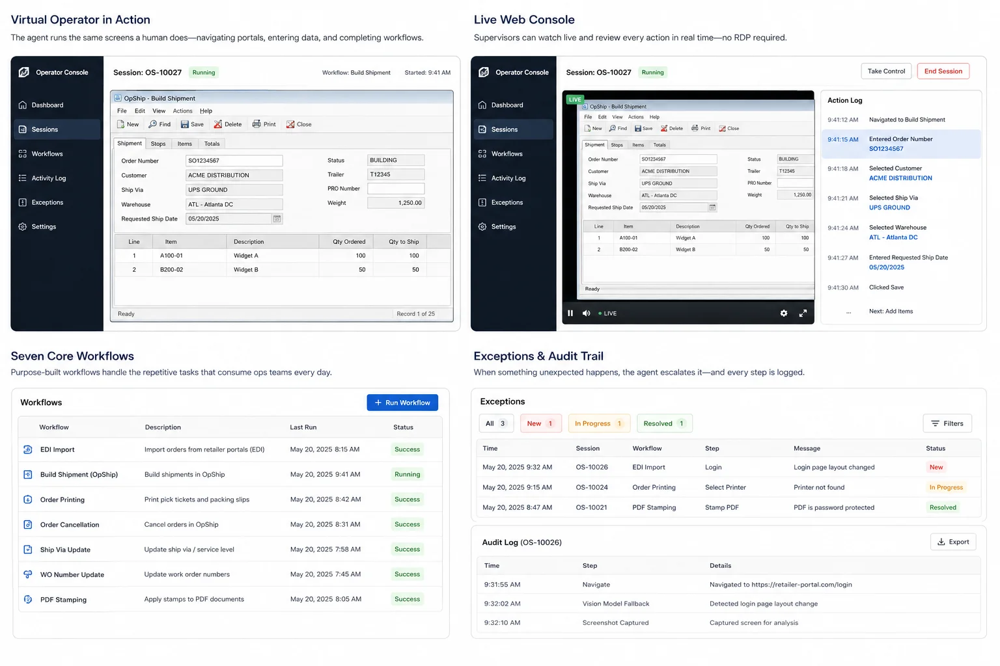
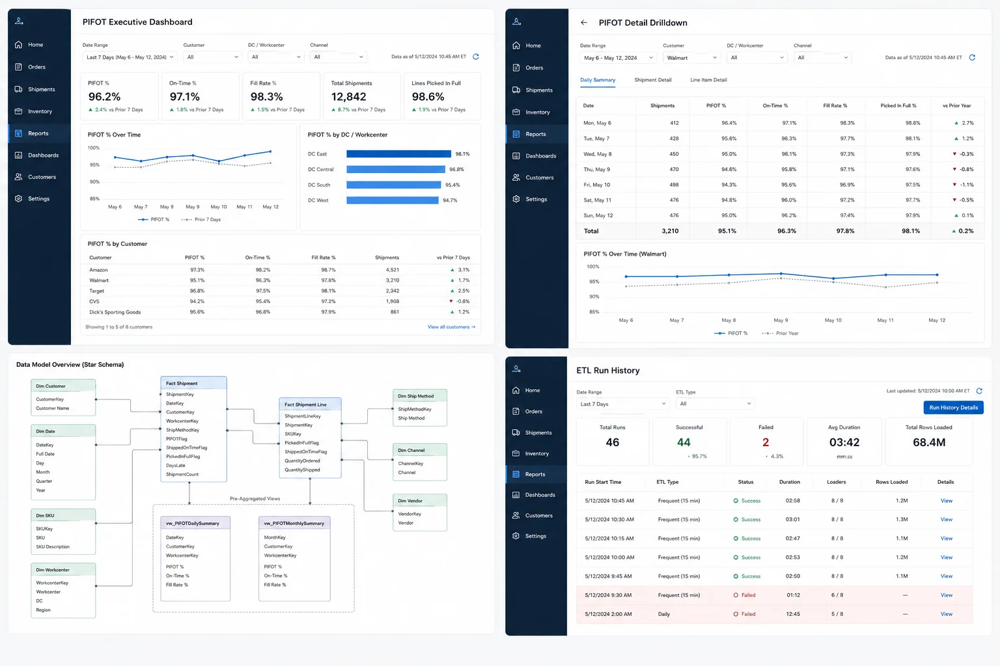
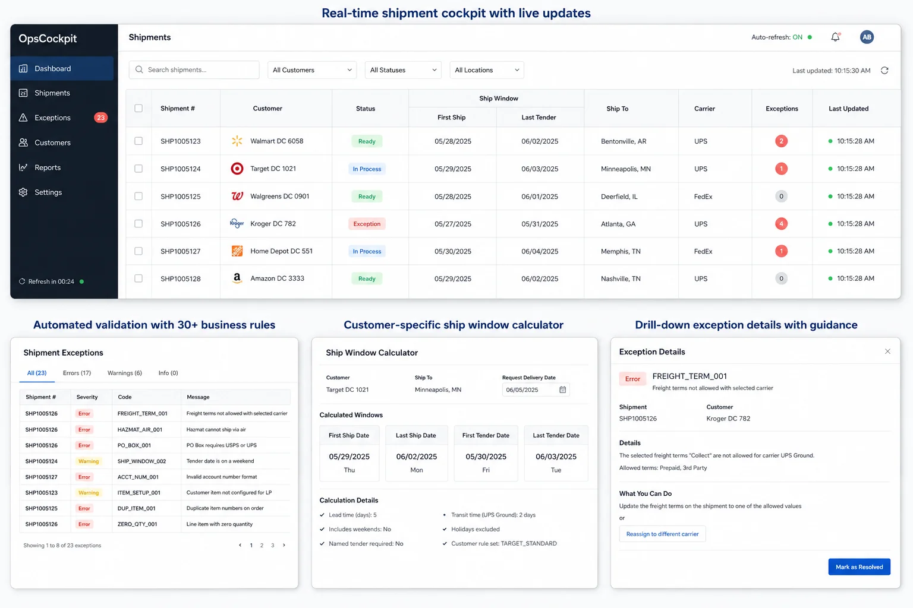
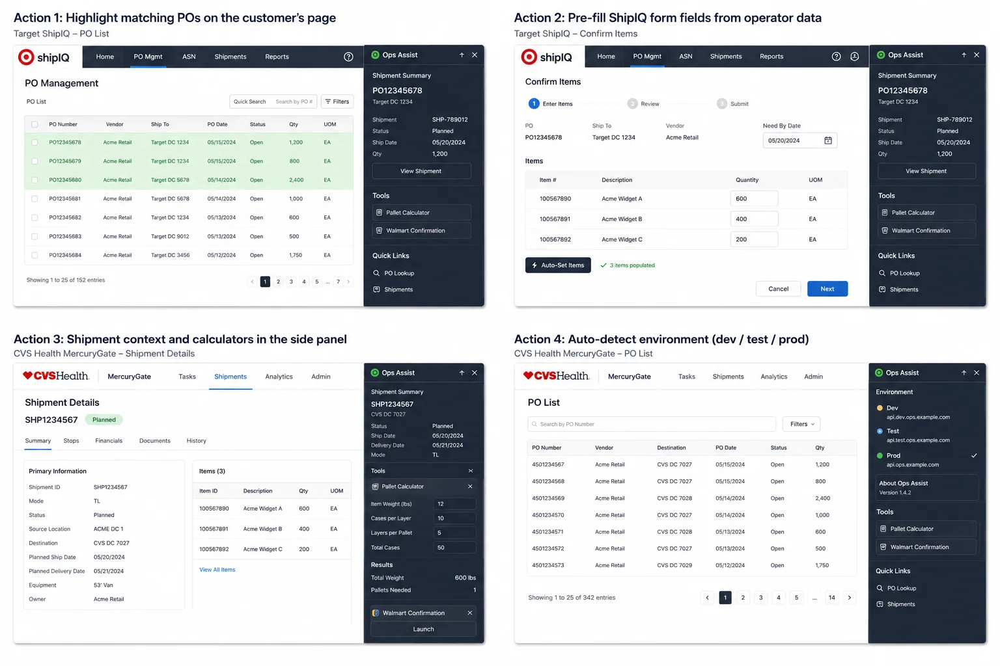
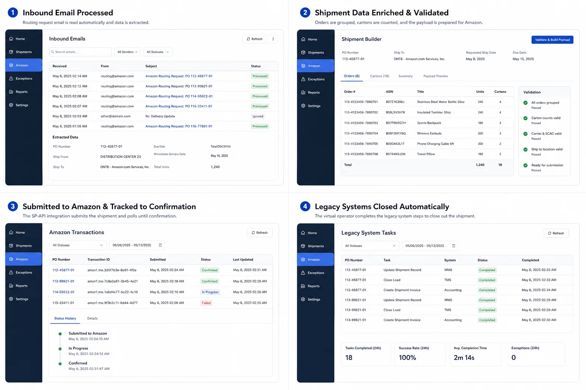

Stop losing margin
in the gaps
between your WMS, portals, and spreadsheets.
We automate the work that sits between your WMS, portals, EDI, and email. It cuts manual hours, catches shipment issues before they cost money, and leaves your WMS in place.
- 70+ hrs/week of manual work removed
- 30+ live shipment validation checks
- Weekly → ~15 min PIFOT refresh
- 0-touch Amazon routing workflow
- ~2 hrs/operator/day reclaimed from portal work
Five margin leaks we've removed.
Each one was a recurring workflow at a real 3PL operation.

70+ hrs/wk eliminatedManual screen work
70+ hrs/week removed by a supervised virtual operator driving WMS, ERP, and portal screens.
Read case study
Weekly → 15 min PIFOTRetailer scorecards
Weekly PIFOT reporting reduced to a ~15-minute refresh.
Read case study
30+ live validation rulesShipment exceptions
30+ validation rules catching issues before they become chargebacks.
Read case study
~2 hrs/operator/day reclaimedCustomer portals
~2 hrs/operator/day reclaimed from ShipIQ and Amazon portal work.
Read case study
Email → confirmed, hands-offAmazon routing
Email-in to confirmed SP-API shipment with no human in the loop.
Read case studyNot a WMS replacement.
Your WMS stays. Not a dashboard project. Not an AI pilot. We handle the portals, exceptions, compliance rules, reporting, and spreadsheets in between.
- Independent 3PLs and fulfillment operators with systems they can't easily replace
- Retailer-heavy or marketplace-heavy accounts
- Manual portal work and exception chasing eating real hours
- Pressure on chargebacks, PIFOT, or ship-window math
- Operators relying on spreadsheets and email to bridge systems
- Leaders who can measure what the manual work is costing
- You mainly need a new WMS implementation
- You want generic software development unrelated to 3PL operations
- You want an AI pilot without a measurable operational workflow
- You only need a dashboard, not a workflow change
- You can't give us access to the systems and process owners we need to measure ROI
How an engagement starts.
Code isn't the first thing we ship. The first job is confirming the workflow is happening often enough, and costing enough, to be worth automating.
Four steps.
Each one decides whether the next is worth doing. No long contracts before the work has earned them.
Intro call
A 30-minute conversation to figure out whether your workflow has enough volume and pain to justify a paid assessment.
- Identify the manual workflow or exception pattern
- Confirm the systems involved
- Discuss current cost and ownership
- Decide whether an assessment is warranted
Margin leakage assessment
A short engagement that maps the workflow, quantifies the leakage, and lands on a recommendation for the first build.
- Workflow map
- Systems and data-access review
- Exception and compliance-risk inventory
- ROI model
- Build recommendation and plan
First build
Build one workflow around your existing systems. The first one is usually validation, portal automation, a live scorecard, or a virtual operator.
- Narrow first workflow
- Parallel run before cutover
- Audit logs and supervision
- Operator training
- Before/after metric review
Ongoing support
Monitor, improve, and extend the build to more rules, portals, customers, and sites as the operation grows into it.
- Rule changes
- Portal changes
- Monitoring and support
- New workflow candidates
- Expansion roadmap